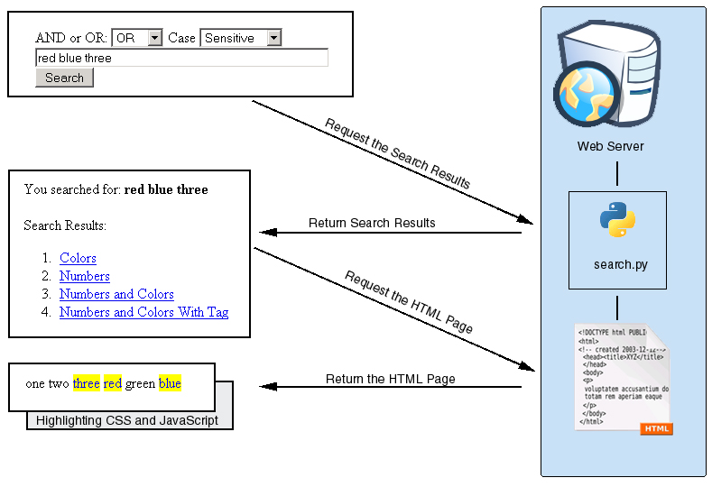

The ability to search a specific web site for the page you are looking for is a very useful feature. However, searching can be complicated and providing a good search experience can require knowledge of multiple programming languages. This article will demonstrate a simple search engine including a sample application you can run in your own site. This sample application is also a good introduction to the Python programming language.
This application is a combination of Python, JavaScript, CSS (Cascading Style Sheets), and HTML. You can run this application on any server which supports CGI and has Python installed. This application was tested with Python version 2.5.1. I ran this application with the Apache HTTP server. The JavaScript and style sheets for this page have been tested with Internet Explorer, Firefox, and Safari.
The code in this application is free and is released under the Apache 2.0 license. That means you are welcome to use, copy, and change this code as much as you would like. If you find any bugs, have any comments, or make any improvements I would love to hear from you. There are a couple of other programs needed to run this application. They are all free, but some of them use different licenses. You should make sure to read and understand each license before using a product.
Setup
source code
Get the Source Code
You should start by downloading the source code for this sample. It can be found here. Once you have downloaded it you can unzip it to a work directory on your computer.
Other Programs
This program has been designed to run with the Python interpretor. You will need to have Python installed in order to use this program. If you do not already have Python you must download and install it before you run this sample.
This program can be run locally for testing, but it is meant to be run along with an HTTP server. This program will run in any HTTP server which supports CGI, but it has only been testing with the Apache HTTP server.
Run the Sample
Once you have installed Python and the Apache HTTP server you can run this program using the following steps. These steps will generate an HTML document containing search results to the system console. You can pipe this output to a file and open that file in your web browser. You may need to either add the Python executable to your path or indicate the full path to that executable depending on your system configuration.
- Unzip the samples archive to a directory on your machine.
- Open a command prompt and change directories to the location you unzipped the sample in.
- You can run the command
python search.py > searchoutput.htmlto test this sample locally.
This application has been configured to run via the command line interface for easy access and testing. Configuration for a web server will be discussed later in this article.
Core Technologies
This program will use the following core technologies:
- Python
- JavaScript
- Cascading Style Sheets
- HTML
This application is meant to be a useful sample of a web site search engine. It is also a good introduction to Python, CSS, JavaScript, and HTML. This sample will demonstrate how these three technologies can work together to create a rich and configurable user interface for searching your applications.
Why Python
There are a lot of web scripting languages and tools available. PERL and Ruby come quickly to mind, but there are many more. Python is a dynamically typed object oriented language. In comparison to Java, Python allows you to reassign object types. Python does not require all code to be within an object in the way that Java does. Python can also work more like a traditional scripting language with less object use.
PERL has a specialized syntax which can be difficult to learn and Ruby most commonly relies on the RAILS framework. They are both very popular and this application could have easily been written with either of them. The benefits of PERL vs. Ruby vs. Python have been debated many times and I will not go over them here. This application could have been written in any one of those languages. Python just happens to be the language I was most interested in when I first wrote this code.
How It Works
This application works as a combination of four technologies. Some of the code in this application will run on your server and some will run in the browser. It is important to remember the context in which the code will run when creating it.

This sample includes a sample search form named Search.html. You can customize this file as much as you want, but you must make sure that the name of the form controls remains the same. This form specifies an action URL of /cgi-bin/search.py. You may have to change this URL to reflect the location you have placed the search script on your web server. Once the user enters a search terms and presses the search button the data will be sent to the search.py script on the server. This script will take the search terms, do the actual search, and return the search results.
The search results page will be generated based on the SearchResults.html file which must be placed in the same directory as the search.py script. This HTML file contains two special values ${SEARCH_TERMS_GO_HERE} and ${SEARCH_RESULTS_GO_HERE}. These values will be replaced with the search terms and the search results respectively. Each of the search results contains a link to the page where the terms were found and some special information for the JavaScript in each page to use when highlighting the search terms. When the user clicks on one of these links they will get the HTML page containing the search terms with each term highlighted when it appears in the text.
Each page with highlighting enabled must contain a couple of small small code references. Somewhere in the header of each HTML file you must import the JavaScript and CSS files which know how to handle the search. That code looks like this:
<script type="text/javascript" src="../search.js" />
<style type="text/css" media="all">
@import "../SearchResults.css";
</style>
|
These files contain the JavaScript which will do the actual searching the the style sheet which indicates how the terms should be highlighted. In addition to importing this code you must actually run it. The code will be run in response to the onload event from the body tag. That declaration is very simple. It looks like this:
<body onload="doSearch();"> |
This code will be run when the page is loaded so the search terms will be highlighted properly.
General Search Algorithms and This One
Sorting and Searching by Donald Knuth was one of the first programming books I read. This tome discusses most of the basic approaches to one of programming seminal problems: searching. Searching is a fundamentally difficult problem. There are many different search algorithms. This program uses linear search, one of the most basic. That means that the program simply opens each file, looks for the terms, and closes the file. This program will not build any type of search index.
A search index is a file or set of data built before the search is performed. The index lists all the possible terms you could search for in a format which is fast to search and often sorted in a useful way like a tree. Building a search index is a requirement for good performance when searching large sets of data. However, linear search can be faster when working with smaller sets. This program demonstrates just one of many possible searching algorithms.
Let’s Look at the Code
The code for this application is made up of two files search.py and search.js. search.py is the program which returns the search results from the server and search.js performs the search in the browser. search.py will only run on the server and search.js will only run in the browser.
search.py
search.py is a Python script which will parse the search terms, execute the search, and generate an HTML page containing the search results. search.py was developed and tested as a CGI script. CGI (Common Gateway Interface) is a simple way of interacting with interpreted scripts of many languages. When a specific URL is called the script is called on the command line and passed the parameters of the URL. This works especially well on UNIX systems where the first line of the file can be used to specify the way the file will be run.
#!/usr/bin/env python
|
This line specifies that the file should be run with the program python wherever it is available in the server environment. This line begins with the pound sign to indicate that it is a comment line and should not be processed like part of the program.
This program is very generic and flexible, but there is one change which you will need to make before deploying it. The program defines a variable indicating the base directory to look for HTML files in while searching.
BASE_DIR = "test/" |
This is the correct variable for running the program on the command line. You will need to change this variable to point to the location of your HTML files when you run it on a web server.
search.py needs to actually open and search each file. Let’s look at a simplified version of the dosearch method. The full method can be found in search.py in the sample application.
def dosearch(terms, searchtype, case, adddir, files = []):
found = []
if files != None:
titlesrch = re.compile('>title<.*>/title<')1
for file in files:
title = ""
if not (file.lower().endswith("html") or file.lower().endswith("htm")):
continue2
filecontents = open(BASE_DIR + adddir + file, 'r').read()
titletmp = titlesrch.search(filecontents)3
if titletmp != None:
title = filecontents.strip()[titletmp.start() + 7:titletmp.end() - 8]
filecontents = remove_tags(filecontents)4
filecontents = filecontents.lstrip()
filecontents = filecontents.rstrip()
if dofind(filecontents, case, searchtype, terms) > 0:5
found.append(title)
found.append(file)
return found6
|
When we search through a file we are looking for the search terms and for the title of the page. We only care if the search terms are present in the page, but we need to actually get the text of the title tag so we will use a regular expression. Regular expressions are a powerful mechanism for string matching. The regular expression which we are using indicates that we want all of the text (the .* part) between the tags <title> and </title>. We compile this regular expression ahead of time 1 so we can use it over and over for each file. The title will be used as the text of the link on our search results page.
Once we have compiled the regular expression we need to find the files to search for the terms in. The full implementation of this function will recurse into subdirectories. We don’t want to look in images or internal files, so we will limit our search to files which end in html or htm 2. When we open the file it will include the HTML tags and we will use those tags to find the title of the page3. After we have found the title we will remove the HTML tags 4.
We need to make sure not to find the search terms if they appear within HTML tags. The test file numbersandcolorswithtag.html is a test case for this with the tag <span class="blue" />. If the search terms include the word blue we do not want to find it in this tag. The easiest way to do this is to remove any HTML tags before we try to find the search term. The best way to do this would be to parse the HTML in order to remove all the tags, but that would also be complex and slow. We are just searching for the < and the > characters which start and end the tags. Once we have removed the HTML tags we can also remove any excess white space before actually doing the search5. Once we have gathered the search results we can return a tuple containing the search results 6.
Once we have found the search results we need to generate the results page. This means we need to create an HTML page with the search results formatted in list format. Let’s look at a simplified version of the doresultspage and doresults functions. The full version of these functions are available in search.py in the sample code.
def doresultspage(terms = [], results = []):
for line in open("SearchResults.html", 'r'):1
if line.find("${SEARCH_RESULTS_GO_HERE}") != -1:
doresults(terms, results)2
elif line.find("${SEARCH_TERMS_GO_HERE}") != -1:
termindex = line.find("${SEARCH_TERMS_GO_HERE}")
searchterms = "" + terms + "\n"
print line.replace("${SEARCH_TERMS_GO_HERE}", searchterms)3
else:
print line4
|
The creation of the search results page starts with the doresultspage function. This function will start by reading in the SearchResults.html file 1. This file is an HTML file which can be customized to make the search results page match the look and feel of your application. This file can be customized to change all of the contents and formatting around the search terms and results. There are two special tokens in this page. The ${SEARCH_RESULTS_GO_HERE} string will be replaced by the results of the search in the doresults function 2. The search terms will be inserted where the ${SEARCH_TERMS_GO_HERE} string is found 3. All other parts of the file will be written out without any changes 4.
The doresults function will handle writing the actual search results. The search results are formatted as an ordered list contained within a div tag. This div tag is given the id search_results so it can be customized with CSS.
def doresults(terms = [], results = []):
print "<div id=\"search_results\">\n<ol>"
if len(results) == 0:
print "<h3>Your search did not return any results.</h3>"1
for i, file in enumeratez(results):2
if i % 2 == 1:
continue
print "<li><a href=\"test/" + results[i + 1] + \
"?search=true&term=" + terms.replace("\"", "%22") + "\">"3
print results[i] + "</a>\n"
print "</ol>\n</div>\n"4
|
This method starts by making sure the search had results 1. If the search did not return any results then we want to present a good message to the user. If the search did return results then we will iterate through them and generate the HTML code needed to represent them. Python added a new built-in function named enumerate in version 2.3. We want to make sure that our code will run on older versions of Python so it is using a custom version of the enumerate function named enumeratez 2. If you are using a later version of Python then you can replace each call to this function with a call to the standard one.
When we generate the links to the search results 3 we need to add some special parameters to the URL. These parameters will be read by search.js in order to highlight the search terms in the final code. There are special characters which are not allowed in HTTP URLs. These characters must be represented with an escape character sequence. Most of these characters are removed from our search terms before this point in the code, but we need to make sure that double quote characters are escaped. Once we have written out all the search results we need to make sure to generate the close tags 4.
search.js
Once the user gets the results of their search and clicks on a page in the search results they want to see their search term on that page. In order to dynamically highlight the search terms in the results page we will use JavaScript running in the browser. We have already seen what JavaScript references must be added to the HTML page and how the search results page will add parameters to the URL for the results page. Those parameters are used in search.js.
There is a lot of processing in the search.js file, but the actual search happens in the doSearchHighlight function. Let’s look at a simplified version of this function. The full version is available in the file search.js as part of the sample code.
function doSearchHighlight(bodyText, searchTerm)
{
highlightStartTag = "<span class=\"searchterm\">";1
highlightEndTag = "</span>";
var newText = "";
var i = -1;
var lSearchTerm = searchTerm.toLowerCase();
var lBodyText = bodyText.toLowerCase();
while (bodyText.length > 0) {
i = lBodyText.indexOf(lSearchTerm, i+1);
if (i < 0) {
newText += bodyText;
bodyText = "";2
} else {
if (bodyText.lastIndexOf(">", i) >= bodyText.lastIndexOf("<", i)) {3
if (lBodyText.lastIndexOf("/script>", i) >=
lBodyText.lastIndexOf("<script", i)) {4
newText += bodyText.substring(0, i) + highlightStartTag +
bodyText.substr(i, searchTerm.length) + highlightEndTag;5
bodyText = bodyText.substr(i + searchTerm.length);
lBodyText = bodyText.toLowerCase();
i = -1;5
}
}
}
}
return newText;
}
|
This function will search through the text of the HTML and wrap each of the search terms in a span tag 1. This span tag will allow the search results to be highlighted in a configurable way. The JavaScript needs to handle the situation where none of the search terms are actually found 2. This shouldn’t happen in our application, but it is good defensive coding. We need to make sure we don’t replace HTML tags3 or code within script tags4. Once we find the term we will wrap it in our special span tag 5.
This JavaScript code is dynamically generating new HTML tags into the page. These tags will never be written anywhere and will not show up if you view the source of the HTML page. They are just available in memory and are strictly temporary.
SearchResults.css
Once the JavaScript functions have run the span tags with the class searchterm will have been added to the HTML file. This alone will not change the formatting of the search terms. We will make the text blue with a yellow background in the SearchResults.css file.
.searchterm {
color: blue;
background-color: yellow;
}
|
This stylesheet can be edited in many different ways. The search terms could have a red background, be bold, or use a larger font. There are many options in cascading style sheets. Changing this one value will change every search term.
Running This Application in the Real World
Using the command line Python processor is an easy way to test this application, but you will need to configure this application to run with a web server if you want to use it as part of your web site. This application can be configured on any HTTP server which supports CGI and has Python installed. Apache HTTP server will also support Python as a module as well as a CGI script. This application will run on UNIX, Windows, and MacOS. Configuring this application will be different on different system, but here are some general guidelines.
- You will need to change the BASE_DIR in search.py to point to your HTML directory.
- You may need to change the path to SearchResults.html in the search.py script.
- You will need to enable CGI or install the Python module.
- Remember to make the search.py file executable if you want to run this application in a UNIX environment.
Good luck!
Conclusion
In this sample we have seen how Python, JavaScript, CSS, and HTML can be combined to provide a powerful search engine for your web application. We have introduced basic search patterns and looked at the CGI interface. There is also much more information, comments, and sample code available in the source archive for this sample.
I hope this has been a useful and educational example. You can take this example and adapt it for use in your web application. You can also edit the CSS and HTML files to change the look of the application without changing any of the code as well as adding more features or even a search index to the search.py script. If you come up with any good features I would love to hear about them.
Part of the image in this document was made using an image by Dr. E.F. Tymac. That image and the resulting image are both licensed under the Creative Commons Attribution-ShareAlike 2.5 License.